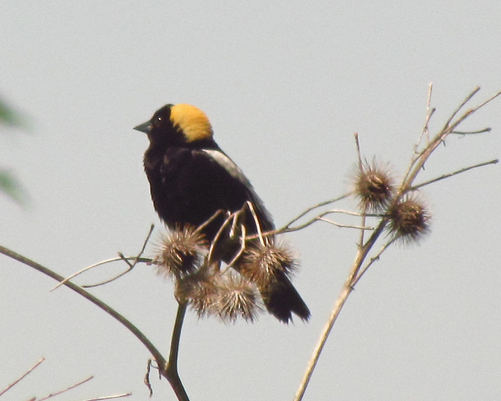

Bobolink
Dolichonyx oryzivorus
- Kind
- bird
- Native to Vermont
- yes
- Legal status
- State rank S5B and labelled SGCN-M. The Atlas says blocks occupied fell from 156 to 147 (6 percent) between atlases, the most in the Northeastern Highlands and Northern Green Mountains. Federal law: the Migratory Bird Treaty Act (see Legal status). (checked 2026-10-31)
- Look-alikes
- Sparrows (compare the female and nonbreeding male; Audubon)
Pictures

Names
Bobolink, Dolichonyx oryzivorus.
Range and habitat
The Atlas says Bobolinks are prairie birds by ancestry that reached Vermont's hayfields after 18th-century land clearing; Vermont has up to three times the density of the remaining native prairie. The state's population is concentrated in the Champlain Valley, which has about 146,000 hectares (361,000 acres) of managed grassland. The profile names two threats: loss of grassland to development or reforestation, and early, more frequent hay harvests in the breeding season.
How to identify (by season; look-alikes and the key difference)
- Size: 6.3 to 7.1 inches long (16 to 18 cm), wingspan 10.6 to 11.8 inches (Audubon).
- Breeding male: black below, with much white on the back and a yellow nape. Female and nonbreeding male: buffy and streaky with black stripes on the crown; compare them to sparrows.
- Shape: pointed wings, and a tail that is multi-pointed or rounded.
- Voice: the flight song is a series of bubbling, tumbling, gurgling phrases, each on a different pitch; the call is a soft "pink", often heard in migration.
Through the year
Dates are typical for Vermont and shift with elevation and year; "approximate" means the source gave a season and the dates are a translation of it.
| When | What | Look for | What to do | Dates |
|---|---|---|---|---|
| May 10 to May 31 | migration (watch) | After a 6,000-mile (9,656 km) migration from central South America, bachelor groups of males appear in mid-May, roughly a week before the females (the Atlas). | - | approximate |
| May 18 to Jul 30 | nesting (watch) | Nests on the ground in grassland of moderate to tall vegetation. In the Champlain Valley eggs were found as early as 18 May; mean clutch 4.74 eggs; incubation 10 days and about 10 to 11 more days in the nest; the latest nest fledging was on 30 July. One brood a year (Audubon). | - | stated |
| Jun 1 to Jul 7 | nesting (avoid) | Do not mow or hay a nesting field in this window. Fields cut on 11 June had near zero reproductive success. Atlas management advice for grassland birds: delay cutting until at least 7 July (ideally 15 July to 1 August), or limit the first mowing to dates before 1 June and make the second no earlier than 65 days after the first. | - | stated |
Role and management
Audubon lists mostly insects (beetles, grasshoppers, caterpillars) and seeds. For a hayfield owner: the Atlas gives numbers. An average female produced 0.05 fledglings a year when hay was first cut on or before 11 June, 2.2 when cut between 21 June and 11 July, and 2.8 when cutting was delayed until 1 August (Perlut and others). Its advice is the mowing calendar in the third line above, and a large grassland reserve of at least 1,000 hectares in the Champlain Valley. Other nesting grassland birds share the problem (Savannah Sparrow, Eastern Meadowlark).
What helps it thrive (light, soil, shelter, food and the trees it uses)
Grassland birds in general (the Guide, chapter 15). They need large, grass-dominated fields with other herbaceous plants, few woody plants and an open landscape: fields over 25 acres are most productive and as small as 10 acres will support some birds; round or square fields give more interior than long, narrow ones; 50 to 75 percent grass with the rest forbs; no shrubs such as dogwood, alder and cherry; and a period each summer with no mowing, because birds arrive in early May and the young need 49 to 52 days to escape mowers, with a field in use until early to mid-August.
- This species: Atlas data: an average female produced 0.05 fledglings a year when hay was first cut on or before 11 June, 2.2 when cut between 21 June and 11 July, and 2.8 when cutting was delayed to 1 August; its advice is the mowing calendar in the Through the year table, and a large grassland reserve of at least 1,000 hectares in the Champlain Valley. See Pollinator Habitat on Forest and Field for the flowers.
Legal status
Native birds are covered by the federal Migratory Bird Treaty Act, which prohibits taking (killing, capturing, selling, trading and transport are named) protected migratory birds without prior authorization (U.S. Fish and Wildlife Service page, read through a summarizing fetch 2026-10-31). The Act applies to native species named in the treaties (50 CFR 10.13); that list was not checked for this species, and the page read says nothing about nests or about cutting trees in nesting season. Ask the county forester or the Fish and Wildlife Service before work near an active nest.
Listen
No openly licensed recording of this species was found on Wikimedia Commons (searched 2026-11-01), so there is no player here. Its voice is described in words under How to identify.
Sources
- Vermont Center for Ecostudies, Vermont Breeding Bird Atlas, Bobolink species profile: http://val.vtecostudies.org/projects/vermont-breeding-bird-atlas/bobolink/ (read through a summarizing fetch 2026-10-31)
- Vermont Center for Ecostudies, The Second Vermont Breeding Bird Atlas (2003-2007), Bobolink species account (two pages; read as text 2026-10-31): https://media.vtecostudies.org/wp-content/uploads/2026/08/03141226/Bobolink_vbba2.pdf
- National Audubon Society, Guide to North American Birds, Bobolink: https://www.audubon.org/field-guide/bird/bobolink (read through a summarizing fetch 2026-10-31)
- U.S. Fish and Wildlife Service, Migratory Bird Treaty Act of 1918: https://www.fws.gov/law/migratory-bird-treaty-act-1918 (read through a summarizing fetch 2026-10-31)
- Vermont Fish & Wildlife Department, A Landowner's Guide, Wildlife Habitat Management for Lands in Vermont, chapter 15 (Grassland Habitat Management): https://vtfishandwildlife.com/sites/fishandwildlife/files/documents/Learn%20More/LandownersGuide/Landowner-Guide-Complete.pdf (read as text 2026-11-01)
What this page is based on
Kind of source: mixed (the Vermont Breeding Bird Atlas profile and second-atlas account, Vermont Center for Ecostudies; Audubon's field guide, secondary)
What was read: The Vermont Breeding Bird Atlas species profile (read through a summarizing fetch) and the second Atlas species account (a two-page PDF read as text), both from the Vermont Center for Ecostudies, and the Audubon field guide page (summarizing fetch), all on 2026-10-31. Atlas dates are the earliest and latest records of each stage in Vermont during 2003-2007 (so they are stated, not translated); the Atlas pages do not define the state-rank labels. The U.S. Fish and Wildlife Service Migratory Bird Treaty Act page was read the same way. Pictures: the Wikimedia Commons description and the photo itself were looked at. Habitat needs added 2026-11-01 from chapter 15 of the Vermont Fish and Wildlife Landowner's Guide (read as text).
Last checked: 2026-10-31
Vermont Woodland Owner's Reference, built 2026-11-09. Rules and dates here are summaries, not legal advice; dates shift with elevation and year. Photo and recording credits · The text is by Loop Works, CC BY 4.0 (pictures and recordings keep their own licenses) · Note: _reference/US-VT/Species/Bobolink.md